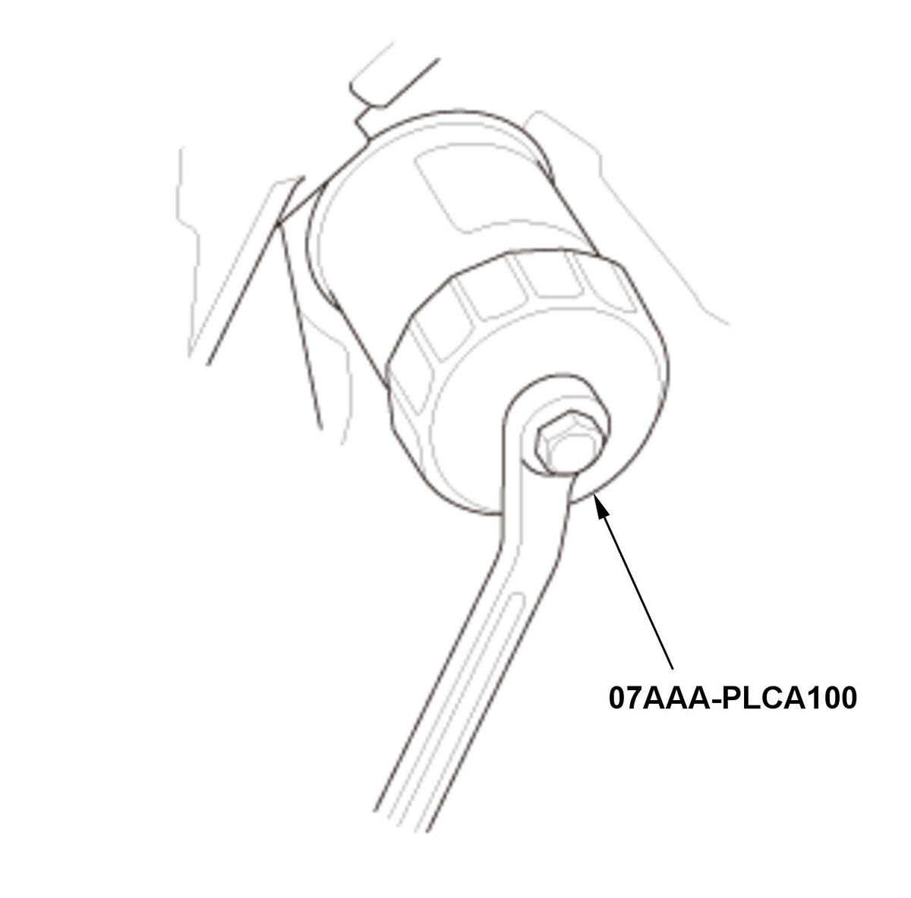

LEMON Manuals
: Even more car manuals for everyone: 1960-2025
Home
>>
Honda
>>
2016
>>
Civic LX, 4D Sedan, Automatic CVT Trans
>>
Repair and Diagnosis
>>
Engine Mechanical
>>
Lubrication System
>>
Lubrication System - Service Information
>>
Removal and Installation
>>
Engine Oil Filter Removal and Installation (1.5L Engine)
>>
Removal
Engine Oil Filter Removal and Installation (1.5L Engine): Removal
Vehicle - Lift
Engine Undercover Plate - Remove
Oil Filter - Remove

Courtesy of HONDA, U.S.A., INC.
1. Remove the oil filter with the oil filter wrench.